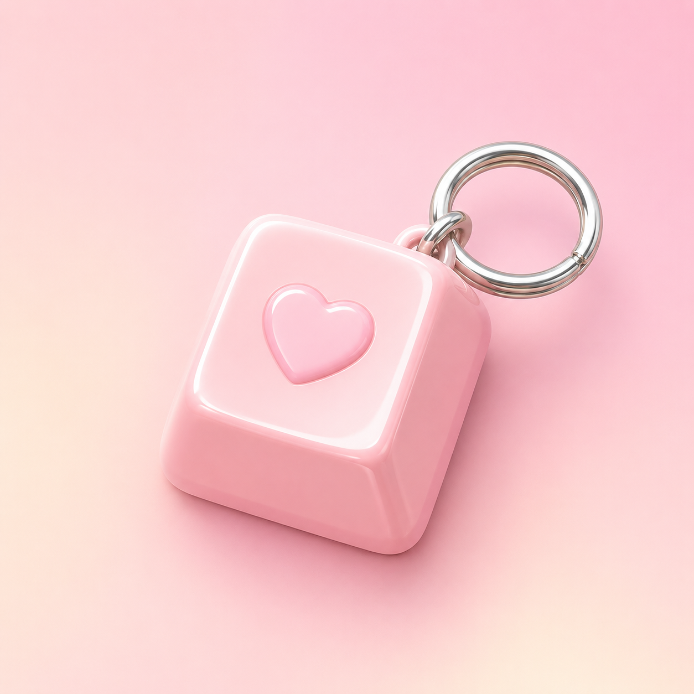
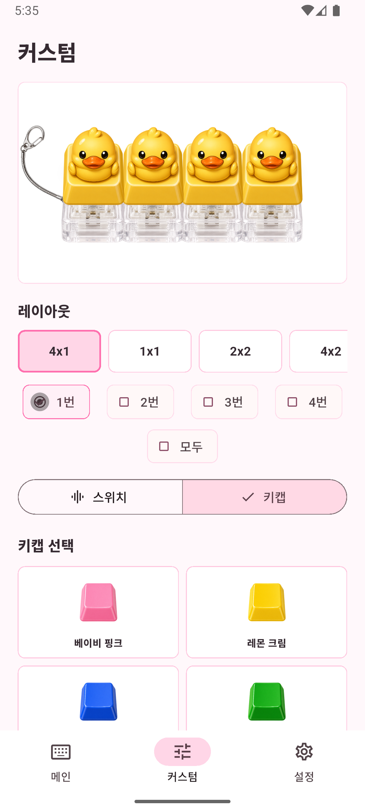

What I work on
I mainly work on mobile apps, interaction-heavy interfaces, and screens with meaningful state changes. I tend to focus less on static presentation and more on production-shaped flows: settings, persistence, media handling, and the polish required before shipping.
Even in personal projects, I try to make the product feel complete. That means thinking about first impression, response after input, recoverability, and operational details together.
How I build
What matters to me
Current app work
This section is meant to grow over time. Right now it highlights one app, but the layout is intended to expand as more shipped or in-progress apps are added.

KeyCap KeyRing Flutter · Android · iOSA customization app for building miniature keycap keyring combinations
KeyCap KeyRing is an Android app for composing miniature keycap keyring setups directly on screen. It is designed so layout, switch, keycap, and photo choices update the result immediately, with the visual style integrated into the actual selection flow rather than treated as decoration.
The app is built with Flutter, with theme setup at the MaterialApp entry point and responsibilities split across AppShell, screen-level composition, and widget-level controls. It also includes practical mobile surfaces such as image picking, recording, playback, audio trimming, in-app purchase, and ads.
